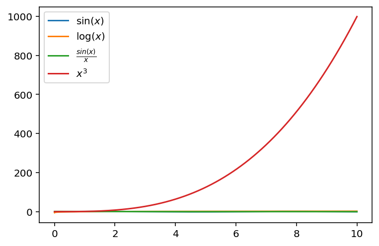
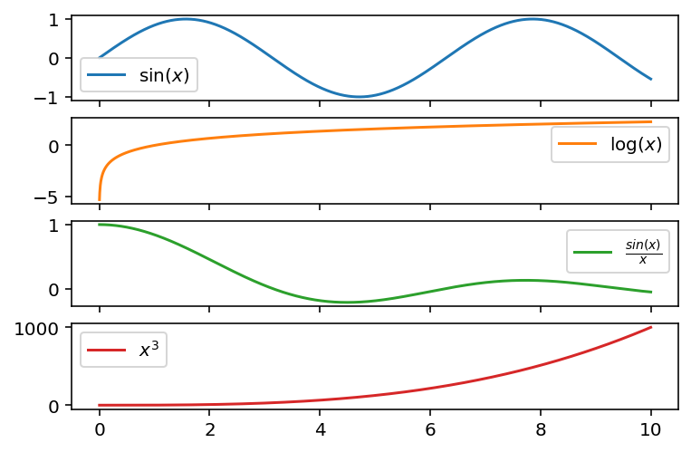
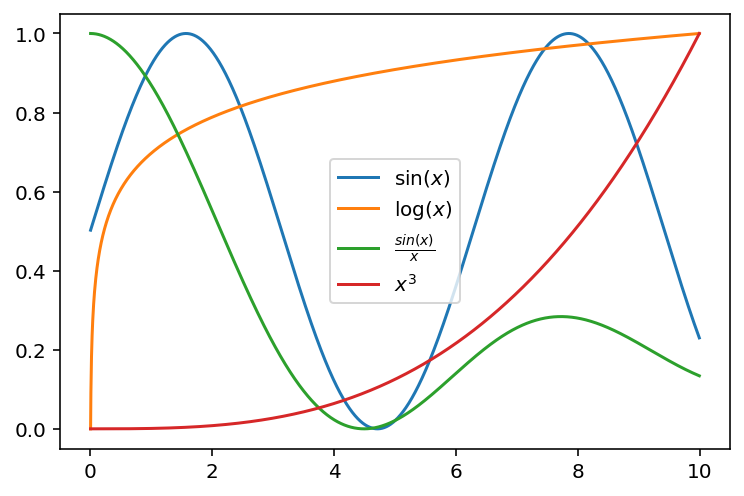

import numpy as np
import matplotlib.pyplot as plt
import pandas as pd
%matplotlib inline
%config InlineBackend.figure_format='retina'Misc tips
Misc tips
Miscelleneous tips
- Tab Complete
- a.b?
- Black format
- rich
- table
- inspect
- dir()
- timing
- timing with sort?!
- timeit object
- plotting timing
- array .tolist()
- Dataclasses
- Annotation
- Plotting with pandas (sin, log, question …)
n = 100
k = 20
m = 50
np.random.seed(0)
a = np.random.randn(n, k)
b = np.random.randn(k, m)
a.shape, b.shape((100, 20), (20, 50))a_list_of_list = a.tolist()
a_list_of_list[0]list"list" in dir(a)[:]Falseimport rich
rich.inspect(a.tolist, methods=True, all=True)╭──────────────────────── <built-in method tolist of numpy.ndarray object at 0x164cbb8d0> ────────────────────────╮ │ def ndarray.tolist(...) │ │ │ │ a.tolist() │ │ │ │ __doc__ = "a.tolist()\n\n Return the array as an ``a.ndim``-levels deep nested list of Python │ │ scalars.\n\n Return a copy of the array data as a (nested) Python list.\n Data items │ │ are converted to the nearest compatible builtin Python type, via\n the │ │ `~numpy.ndarray.item` function.\n\n If ``a.ndim`` is 0, then since the depth of the │ │ nested list is 0, it will\n not be a list at all, but a simple Python scalar.\n\n │ │ Parameters\n ----------\n none\n\n Returns\n -------\n y : object, or list │ │ of object, or list of list of object, or ...\n The possibly nested list of array │ │ elements.\n\n Notes\n -----\n The array may be recreated via ``a = │ │ np.array(a.tolist())``, although this\n may sometimes lose precision.\n\n Examples\n │ │ --------\n For a 1D array, ``a.tolist()`` is almost the same as ``list(a)``,\n │ │ except that ``tolist`` changes numpy scalars to Python scalars:\n\n >>> a = │ │ np.uint32([1, 2])\n >>> a_list = list(a)\n >>> a_list\n [1, 2]\n >>> │ │ type(a_list[0])\n <class 'numpy.uint32'>\n >>> a_tolist = a.tolist()\n >>> │ │ a_tolist\n [1, 2]\n >>> type(a_tolist[0])\n <class 'int'>\n\n Additionally, │ │ for a 2D array, ``tolist`` applies recursively:\n\n >>> a = np.array([[1, 2], [3, │ │ 4]])\n >>> list(a)\n [array([1, 2]), array([3, 4])]\n >>> a.tolist()\n [[1, │ │ 2], [3, 4]]\n\n The base case for this recursion is a 0D array:\n\n >>> a = │ │ np.array(1)\n >>> list(a)\n Traceback (most recent call last):\n ...\n │ │ TypeError: iteration over a 0-d array\n >>> a.tolist()\n 1" │ │ __module__ = None │ │ __name__ = 'tolist' │ │ __qualname__ = 'ndarray.tolist' │ │ __self__ = array([[ 1.76405235e+00, 4.00157208e-01, 9.78737984e-01, ..., │ │ -2.05158264e-01, 3.13067702e-01, -8.54095739e-01], │ │ [-2.55298982e+00, 6.53618595e-01, 8.64436199e-01, ..., │ │ 1.20237985e+00, -3.87326817e-01, -3.02302751e-01], │ │ [-1.04855297e+00, -1.42001794e+00, -1.70627019e+00, ..., │ │ 3.02471898e-01, -6.34322094e-01, -3.62741166e-01], │ │ ..., │ │ [ 8.73311836e-01, 1.19973618e+00, 4.56153036e-01, ..., │ │ -1.24021634e+00, 9.00054243e-01, 1.80224223e+00], │ │ [-2.08285103e-01, 1.57437124e+00, 1.98989494e-01, ..., │ │ 4.32837621e-01, -8.08717532e-01, -1.10412399e+00], │ │ [-7.89102180e-01, 1.24845579e-03, -1.59939788e-01, ..., │ │ 1.58433847e-01, -1.14190142e+00, -1.31097037e+00]]) │ │ __text_signature__ = None │ │ __call__ = def __call__(*args, **kwargs): Call self as a function. │ │ __class__ = class __class__(): │ │ __delattr__ = def __delattr__(name, /): Implement delattr(self, name). │ │ __dir__ = def __dir__(): Default dir() implementation. │ │ __eq__ = def __eq__(value, /): Return self==value. │ │ __format__ = def __format__(format_spec, /): Default object formatter. │ │ __ge__ = def __ge__(value, /): Return self>=value. │ │ __getattribute__ = def __getattribute__(name, /): Return getattr(self, name). │ │ __gt__ = def __gt__(value, /): Return self>value. │ │ __hash__ = def __hash__(): Return hash(self). │ │ __init__ = def __init__(*args, **kwargs): Initialize self. See help(type(self)) for accurate │ │ signature. │ │ __init_subclass__ = def __init_subclass__(...) This method is called when a class is subclassed. │ │ __le__ = def __le__(value, /): Return self<=value. │ │ __lt__ = def __lt__(value, /): Return self<value. │ │ __ne__ = def __ne__(value, /): Return self!=value. │ │ __new__ = def __new__(*args, **kwargs): Create and return a new object. See help(type) for accurate │ │ signature. │ │ __reduce__ = def __reduce__(...) Helper for pickle. │ │ __reduce_ex__ = def __reduce_ex__(protocol, /): Helper for pickle. │ │ __repr__ = def __repr__(): Return repr(self). │ │ __setattr__ = def __setattr__(name, value, /): Implement setattr(self, name, value). │ │ __sizeof__ = def __sizeof__(): Size of object in memory, in bytes. │ │ __str__ = def __str__(): Return str(self). │ │ __subclasshook__ = def __subclasshook__(...) Abstract classes can override this to customize issubclass(). │ ╰─────────────────────────────────────────────────────────────────────────────────────────────────────────────────╯
lambda x: np.power(x, 3)
def f(x):
return np.power(x, 3)d = {
r"$\sin(x)$": np.sin,
r"$\log(x)$": np.log,
r"$\frac{sin(x)}{x}$": lambda x: np.sin(x) / x,
r"$x^3$": lambda x: np.power(x, 3),
}d{'$\\sin(x)$': <ufunc 'sin'>,
'$\\log(x)$': <ufunc 'log'>,
'$\\frac{sin(x)}{x}$': <function __main__.<lambda>(x)>,
'$x^3$': <function __main__.<lambda>(x)>}x = np.arange(0.005, 10.0, 0.005)e = {k: v(x) for k, v in d.items()}e{'$\\sin(x)$': array([ 0.00499998, 0.00999983, 0.01499944, ..., -0.53137431,
-0.53560333, -0.53981897]),
'$\\log(x)$': array([-5.29831737, -4.60517019, -4.19970508, ..., 2.30108397,
2.30158459, 2.30208497]),
'$\\frac{sin(x)}{x}$': array([ 0.99999583, 0.99998333, 0.9999625 , ..., -0.05321726,
-0.05361395, -0.0540089 ]),
'$x^3$': array([1.25000000e-07, 1.00000000e-06, 3.37500000e-06, ...,
9.95506747e+02, 9.97002999e+02, 9.98500750e+02])}df = pd.DataFrame(e, index=x)df| $\sin(x)$ | $\log(x)$ | $\frac{sin(x)}{x}$ | $x^3$ | |
|---|---|---|---|---|
| 0.005 | 0.005000 | -5.298317 | 0.999996 | 1.250000e-07 |
| 0.010 | 0.010000 | -4.605170 | 0.999983 | 1.000000e-06 |
| 0.015 | 0.014999 | -4.199705 | 0.999963 | 3.375000e-06 |
| 0.020 | 0.019999 | -3.912023 | 0.999933 | 8.000000e-06 |
| 0.025 | 0.024997 | -3.688879 | 0.999896 | 1.562500e-05 |
| ... | ... | ... | ... | ... |
| 9.975 | -0.522877 | 2.300082 | -0.052419 | 9.925187e+02 |
| 9.980 | -0.527132 | 2.300583 | -0.052819 | 9.940120e+02 |
| 9.985 | -0.531374 | 2.301084 | -0.053217 | 9.955067e+02 |
| 9.990 | -0.535603 | 2.301585 | -0.053614 | 9.970030e+02 |
| 9.995 | -0.539819 | 2.302085 | -0.054009 | 9.985007e+02 |
1999 rows × 4 columns
df.plot()<AxesSubplot:>
df.plot(subplots=True)array([<AxesSubplot:>, <AxesSubplot:>, <AxesSubplot:>, <AxesSubplot:>],
dtype=object)
df| $\sin$ | log | $\frac{sin(x)}{x}$ | x^3 | |
|---|---|---|---|---|
| 0.005 | 0.005000 | -5.298317 | 0.999996 | 1.250000e-07 |
| 0.010 | 0.010000 | -4.605170 | 0.999983 | 1.000000e-06 |
| 0.015 | 0.014999 | -4.199705 | 0.999963 | 3.375000e-06 |
| 0.020 | 0.019999 | -3.912023 | 0.999933 | 8.000000e-06 |
| 0.025 | 0.024997 | -3.688879 | 0.999896 | 1.562500e-05 |
| ... | ... | ... | ... | ... |
| 9.975 | -0.522877 | 2.300082 | -0.052419 | 9.925187e+02 |
| 9.980 | -0.527132 | 2.300583 | -0.052819 | 9.940120e+02 |
| 9.985 | -0.531374 | 2.301084 | -0.053217 | 9.955067e+02 |
| 9.990 | -0.535603 | 2.301585 | -0.053614 | 9.970030e+02 |
| 9.995 | -0.539819 | 2.302085 | -0.054009 | 9.985007e+02 |
1999 rows × 4 columns
((df - df.min(axis=0)) / (df.max(axis=0) - df.min(axis=0))).plot()<AxesSubplot:>
df = pd.DataFrame(np.random.randn(1000, 5),
columns="a,b,c,d,e".split(","))
df| a | b | c | d | e | |
|---|---|---|---|---|---|
| 0 | 1.593274 | 0.568722 | -0.114487 | 0.251630 | -1.210856 |
| 1 | -0.393734 | 0.085253 | 0.099422 | -1.530616 | 0.327623 |
| 2 | 0.279196 | -0.377051 | 0.004175 | -1.483492 | -1.479796 |
| 3 | 0.134687 | -0.667723 | -0.011556 | 0.839491 | -0.173930 |
| 4 | -2.810668 | -0.150654 | -0.481044 | -0.234694 | 0.899731 |
| ... | ... | ... | ... | ... | ... |
| 995 | -0.837658 | 1.315288 | -0.364523 | 1.993571 | 1.584878 |
| 996 | -2.104663 | -2.553118 | -1.242666 | 0.201987 | -0.305332 |
| 997 | -1.195587 | -1.577903 | 0.849912 | 0.327590 | -0.001670 |
| 998 | -0.035563 | -0.489252 | 1.930498 | -0.262645 | 0.825932 |
| 999 | -0.643267 | -0.828981 | -0.202735 | -0.257866 | 0.070815 |
1000 rows × 5 columns
df = df.assign(f=df.sum(axis=1))df| a | b | c | d | e | f | |
|---|---|---|---|---|---|---|
| 0 | 1.593274 | 0.568722 | -0.114487 | 0.251630 | -1.210856 | 1.088284 |
| 1 | -0.393734 | 0.085253 | 0.099422 | -1.530616 | 0.327623 | -1.412052 |
| 2 | 0.279196 | -0.377051 | 0.004175 | -1.483492 | -1.479796 | -3.056967 |
| 3 | 0.134687 | -0.667723 | -0.011556 | 0.839491 | -0.173930 | 0.120969 |
| 4 | -2.810668 | -0.150654 | -0.481044 | -0.234694 | 0.899731 | -2.777329 |
| ... | ... | ... | ... | ... | ... | ... |
| 995 | -0.837658 | 1.315288 | -0.364523 | 1.993571 | 1.584878 | 3.691555 |
| 996 | -2.104663 | -2.553118 | -1.242666 | 0.201987 | -0.305332 | -6.003792 |
| 997 | -1.195587 | -1.577903 | 0.849912 | 0.327590 | -0.001670 | -1.597657 |
| 998 | -0.035563 | -0.489252 | 1.930498 | -0.262645 | 0.825932 | 1.968971 |
| 999 | -0.643267 | -0.828981 | -0.202735 | -0.257866 | 0.070815 | -1.862035 |
1000 rows × 6 columns
df.query("f > 5")["f"].std()0.6609257763922614df.query("f <= 5")["f"].std()2.1891090850524444"tolist" in dir(df)Falsedef search(obj, query):
import re
return list(filter(lambda x: re.search(query, x), dir(obj)))search(a, "lis")['tolist']import numpy as np
import pandas as pddef search(obj, query):
import re
from rich import inspect
from rich.pretty import Pretty
from rich.panel import Panel
z = list(filter(lambda x: re.search(query, x), dir(obj)))
p = Panel(Pretty("a"), title=f"Searching for `{query}`")
# return p
ps = []
for q in z:
ps.append(Panel(Pretty(inspect(getattr(obj, q), methods=True, docs=True))))search(np.random, "normal")╭─ <built-in method lognormal of numpy.random.mtrand.RandomState object at 0x10c627840> ─╮ │ def RandomState.lognormal(...) │ │ │ │ lognormal(mean=0.0, sigma=1.0, size=None) │ │ │ │ 29 attribute(s) not shown. Run inspect(inspect) for options. │ ╰────────────────────────────────────────────────────────────────────────────────────────╯
╭─ <built-in method multivariate_normal of numpy.random.mtrand.RandomState object at 0x10c627840> ─╮ │ def RandomState.multivariate_normal(...) │ │ │ │ multivariate_normal(mean, cov, size=None, check_valid='warn', tol=1e-8) │ │ │ │ 29 attribute(s) not shown. Run inspect(inspect) for options. │ ╰──────────────────────────────────────────────────────────────────────────────────────────────────╯
╭─ <built-in method normal of numpy.random.mtrand.RandomState object at 0x10c627840> ─╮ │ def RandomState.normal(...) │ │ │ │ normal(loc=0.0, scale=1.0, size=None) │ │ │ │ 29 attribute(s) not shown. Run inspect(inspect) for options. │ ╰─────────────────────────────────────────────────────────────────────────────────────╯
╭─ <built-in method standard_normal of numpy.random.mtrand.RandomState object at 0x10c627840> ─╮ │ def RandomState.standard_normal(...) │ │ │ │ standard_normal(size=None) │ │ │ │ 29 attribute(s) not shown. Run inspect(inspect) for options. │ ╰──────────────────────────────────────────────────────────────────────────────────────────────╯
getattr(pd.DataFrame().values, "tolist")<function ndarray.tolist>pd.DataFrame.todf = pd.DataFrame()
search(df.values, "list")╭───────────────────────────────────────────── Searching for {query} ─────────────────────────────────────────────╮
│ ['tolist'] │
╰─────────────────────────────────────────────────────────────────────────────────────────────────────────────────╯
search(pd.DataFrame, "to")╭─────────────────────────────────────────────────────────────────────────────────────────────────────────────────╮ │ [ │ │ '_constructor', │ │ '_constructor_sliced', │ │ '_to_dict_of_blocks', │ │ 'kurtosis', │ │ 'to_clipboard', │ │ 'to_csv', │ │ 'to_dict', │ │ 'to_excel', │ │ 'to_feather', │ │ 'to_gbq', │ │ 'to_hdf', │ │ 'to_html', │ │ 'to_json', │ │ 'to_latex', │ │ 'to_markdown', │ │ 'to_numpy', │ │ 'to_orc', │ │ 'to_parquet', │ │ 'to_period', │ │ 'to_pickle', │ │ 'to_records', │ │ 'to_sql', │ │ 'to_stata', │ │ 'to_string', │ │ 'to_timestamp', │ │ 'to_xarray', │ │ 'to_xml' │ │ ] │ ╰─────────────────────────────────────────────────────────────────────────────────────────────────────────────────╯
q = "normal"np.random.normal<function RandomState.normal>from rich import inspect
inspect(eval(f"np.random.{q}"), methods=True, all=True)╭─────────────── <built-in method normal of numpy.random.mtrand.RandomState object at 0x10c627840> ───────────────╮ │ def RandomState.normal(...) │ │ │ │ normal(loc=0.0, scale=1.0, size=None) │ │ │ │ __doc__ = '\n normal(loc=0.0, scale=1.0, size=None)\n\n Draw random samples from a │ │ normal (Gaussian) distribution.\n\n The probability density function of the normal │ │ distribution, first\n derived by De Moivre and 200 years later by both Gauss and │ │ Laplace\n independently [2]_, is often called the bell curve because of\n │ │ its characteristic shape (see the example below).\n\n The normal distributions │ │ occurs often in nature. For example, it\n describes the commonly occurring │ │ distribution of samples influenced\n by a large number of tiny, random │ │ disturbances, each with its own\n unique distribution [2]_.\n\n .. note::\n │ │ New code should use the ``normal`` method of a ``default_rng()``\n instance │ │ instead; please see the :ref:`random-quick-start`.\n\n Parameters\n │ │ ----------\n loc : float or array_like of floats\n Mean ("centre") of │ │ the distribution.\n scale : float or array_like of floats\n Standard │ │ deviation (spread or "width") of the distribution. Must be\n non-negative.\n │ │ size : int or tuple of ints, optional\n Output shape. If the given shape is, │ │ e.g., ``(m, n, k)``, then\n ``m * n * k`` samples are drawn. If size is │ │ ``None`` (default),\n a single value is returned if ``loc`` and ``scale`` are │ │ both scalars.\n Otherwise, ``np.broadcast(loc, scale).size`` samples are │ │ drawn.\n\n Returns\n -------\n out : ndarray or scalar\n │ │ Drawn samples from the parameterized normal distribution.\n\n See Also\n │ │ --------\n scipy.stats.norm : probability density function, distribution or\n │ │ cumulative density function, etc.\n random.Generator.normal: which should be used │ │ for new code.\n\n Notes\n -----\n The probability density for the │ │ Gaussian distribution is\n\n .. math:: p(x) = \\frac{1}{\\sqrt{ 2 \\pi \\sigma^2 │ │ }}\n e^{ - \\frac{ (x - \\mu)^2 } {2 \\sigma^2} },\n\n │ │ where :math:`\\mu` is the mean and :math:`\\sigma` the standard\n deviation. The │ │ square of the standard deviation, :math:`\\sigma^2`,\n is called the variance.\n\n │ │ The function has its peak at the mean, and its "spread" increases with\n the │ │ standard deviation (the function reaches 0.607 times its maximum at\n :math:`x + │ │ \\sigma` and :math:`x - \\sigma` [2]_). This implies that\n normal is more likely │ │ to return samples lying close to the mean, rather\n than those far away.\n\n │ │ References\n ----------\n .. [1] Wikipedia, "Normal distribution",\n │ │ https://en.wikipedia.org/wiki/Normal_distribution\n .. [2] P. R. Peebles Jr., │ │ "Central Limit Theorem" in "Probability,\n Random Variables and Random │ │ Signal Principles", 4th ed., 2001,\n pp. 51, 51, 125.\n\n Examples\n │ │ --------\n Draw samples from the distribution:\n\n >>> mu, sigma = 0, 0.1 # │ │ mean and standard deviation\n >>> s = np.random.normal(mu, sigma, 1000)\n\n │ │ Verify the mean and the variance:\n\n >>> abs(mu - np.mean(s))\n 0.0 # may │ │ vary\n\n >>> abs(sigma - np.std(s, ddof=1))\n 0.1 # may vary\n\n │ │ Display the histogram of the samples, along with\n the probability density │ │ function:\n\n >>> import matplotlib.pyplot as plt\n >>> count, bins, ignored │ │ = plt.hist(s, 30, density=True)\n >>> plt.plot(bins, 1/(sigma * np.sqrt(2 * np.pi)) │ │ *\n ... np.exp( - (bins - mu)**2 / (2 * sigma**2) ),\n ... │ │ linewidth=2, color=\'r\')\n >>> plt.show()\n\n Two-by-four array of samples │ │ from N(3, 6.25):\n\n >>> np.random.normal(3, 2.5, size=(2, 4))\n │ │ array([[-4.49401501, 4.00950034, -1.81814867, 7.29718677], # random\n [ │ │ 0.39924804, 4.68456316, 4.99394529, 4.84057254]]) # random\n\n ' │ │ __module__ = None │ │ __name__ = 'normal' │ │ __qualname__ = 'RandomState.normal' │ │ __self__ = RandomState(MT19937) at 0x10C627840 │ │ __text_signature__ = None │ │ __call__ = def __call__(*args, **kwargs): Call self as a function. │ │ __class__ = class __class__(): │ │ __delattr__ = def __delattr__(name, /): Implement delattr(self, name). │ │ __dir__ = def __dir__(): Default dir() implementation. │ │ __eq__ = def __eq__(value, /): Return self==value. │ │ __format__ = def __format__(format_spec, /): Default object formatter. │ │ __ge__ = def __ge__(value, /): Return self>=value. │ │ __getattribute__ = def __getattribute__(name, /): Return getattr(self, name). │ │ __gt__ = def __gt__(value, /): Return self>value. │ │ __hash__ = def __hash__(): Return hash(self). │ │ __init__ = def __init__(*args, **kwargs): Initialize self. See help(type(self)) for accurate │ │ signature. │ │ __init_subclass__ = def __init_subclass__(...) This method is called when a class is subclassed. │ │ __le__ = def __le__(value, /): Return self<=value. │ │ __lt__ = def __lt__(value, /): Return self<value. │ │ __ne__ = def __ne__(value, /): Return self!=value. │ │ __new__ = def __new__(*args, **kwargs): Create and return a new object. See help(type) for accurate │ │ signature. │ │ __reduce__ = def __reduce__(...) Helper for pickle. │ │ __reduce_ex__ = def __reduce_ex__(protocol, /): Helper for pickle. │ │ __repr__ = def __repr__(): Return repr(self). │ │ __setattr__ = def __setattr__(name, value, /): Implement setattr(self, name, value). │ │ __sizeof__ = def __sizeof__(): Size of object in memory, in bytes. │ │ __str__ = def __str__(): Return str(self). │ │ __subclasshook__ = def __subclasshook__(...) Abstract classes can override this to customize issubclass(). │ ╰─────────────────────────────────────────────────────────────────────────────────────────────────────────────────╯
inspect(inspect)╭─────────────────────────────────────── <function inspect at 0x10f3fc550> ───────────────────────────────────────╮ │ def inspect(obj: Any, *, console: Optional[ForwardRef('Console')] = None, title: Optional[str] = None, help: │ │ bool = False, methods: bool = False, docs: bool = True, private: bool = False, dunder: bool = False, sort: bool │ │ = True, all: bool = False, value: bool = True) -> None: │ │ │ │ Inspect any Python object. │ │ │ │ * inspect(<OBJECT>) to see summarized info. │ │ * inspect(<OBJECT>, methods=True) to see methods. │ │ * inspect(<OBJECT>, help=True) to see full (non-abbreviated) help. │ │ * inspect(<OBJECT>, private=True) to see private attributes (single underscore). │ │ * inspect(<OBJECT>, dunder=True) to see attributes beginning with double underscore. │ │ * inspect(<OBJECT>, all=True) to see all attributes. │ │ │ │ Args: │ │ obj (Any): An object to inspect. │ │ title (str, optional): Title to display over inspect result, or None use type. Defaults to None. │ │ help (bool, optional): Show full help text rather than just first paragraph. Defaults to False. │ │ methods (bool, optional): Enable inspection of callables. Defaults to False. │ │ docs (bool, optional): Also render doc strings. Defaults to True. │ │ private (bool, optional): Show private attributes (beginning with underscore). Defaults to False. │ │ dunder (bool, optional): Show attributes starting with double underscore. Defaults to False. │ │ sort (bool, optional): Sort attributes alphabetically. Defaults to True. │ │ all (bool, optional): Show all attributes. Defaults to False. │ │ value (bool, optional): Pretty print value. Defaults to True. │ │ │ │ 35 attribute(s) not shown. Run inspect(inspect) for options. │ ╰─────────────────────────────────────────────────────────────────────────────────────────────────────────────────╯
from dataclasses import dataclass
@dataclass
class InventoryItem:
"""Class for keeping track of an item in inventory."""
name: str
unit_price: float
quantity_on_hand: int = 0c = InventoryItem("A", 20)cInventoryItem(name='A', unit_price=20, quantity_on_hand=0)class InventoryItemOld:
def __init__(self, name: str, unit_price: float,
quantity_on_hand: int = 0):
self.name = name
self.unit_price = unit_price
self.quantity_on_hand = quantity_on_handd = InventoryItemOld("A", 2)
d<__main__.InventoryItemOld at 0x166340430>def greeting(name: str) -> str:
return 'Hello ' + namegreeting("Abc")'Hello Abc'greeting(10)TypeError: can only concatenate str (not "int") to str